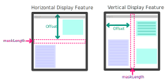

1. Introduction
CSS 2.1 [CSS21] specifies an initial containing block for continuous media that has the dimensions of the viewport. Since the viewport is generally no larger than the display, devices with smaller displays such as phones or tablets typically present a smaller viewport than larger devices like desktop or laptops.
Unfortunately, many documents have historically been designed against larger viewports and exhibit a variety of bugs when viewed in smaller viewports. These include unintended layout wrapping, clipped content, awkward scrollable bounds, and script errors. To avoid these issues, mobile browsers generally use a fixed initial containing block width that mimics common desktop browser window size (typically 980-1024px). The resulting layout is then scaled down to fit in the available screen space.
Although this approach mitigates the issues mentioned above, the downscaling means the CSS pixel size will be smaller than recommended by CSS 2.1. Users will likely need to zoom on the content to view it comfortably.
This mitigation is unnecessary for sites that have been designed to work well on small viewports.
This specification is written from an implementation-centric point of view, making it arguably difficult to read. Significant editorial work may be needed to make it more understandable to different audiences. It also should clarify which viewport is referred to by various js APIs. See this blog post by ppk for a good discussion of these issues.
Various issues about this specification and related specifications are listed in this report.
2. The viewport
In CSS 2.1 a viewport is a feature of a user agent for continuous media and used to establish the initial containing block for continuous media. For paged media, the initial containing block is based on the page area. The page area can be set through @page rules.
This specification introduces a way of overriding the size of the viewport provided by the user agent (UA). Because of this, we need to introduce the difference between the initial viewport and the actual viewport.
- initial viewport
- This refers to the viewport before any UA or author styles have overridden the viewport given by the window or viewing area of the UA. Note that the initial viewport size will change with the size of the window or viewing area.
- actual viewport
-
This is the viewport you get after processing the viewport
<meta>tag.
Make actual viewport the layout viewport, define visual viewport.
When the actual viewport cannot fit inside the window or viewing area, either because the actual viewport is larger than the initial viewport or the zoom factor causes only parts of the actual viewport to be visible, the UA should offer a scrolling or panning mechanism.
It is recommended that initially the upper-left corners of the
actual viewport and the window or viewing area are aligned if the
base direction of the document is ltr. Similarly, that the upper-right
corners are aligned when the base direction is rtl. The base direction
for a document is defined as the computed value of the direction
property for the first <BODY> element of
an HTML or XHTML document. For other document types, it is the
computed direction for the root element.
2.1. Display feature definition
A Display feature is a hardware feature that acts as a divider and creates logically separate region of the viewport calledsegments.
It can be a fold area of a device with a foldable screen or a physical
split occupying a logical space within the viewport for example some dual
screen models.
Below is an illustration describing the concept of display features and how
they divide the viewport in segments:
3.
Viewport <meta> element
3.1. Properties
The recognized properties in the viewport
<meta> element are:
widthheightinitial-scaleminimum-scalemaximum-scaleuser-scalableinteractive-widget
3.2. Parsing algorithm
Below is an algorithm for parsing the content
attribute of the <meta> tag produced
from testing Safari on the iPhone. The testing was
done on an iPod touch running iPhone OS 4. The UA string of the
browser: "Mozilla/5.0 (iPod; U; CPU iPhone OS 4_0 like Mac OS X;
en-us) AppleWebKit/532.9 (KHTML, like Gecko) Version/4.0.5
Mobile/8A293 Safari/6531.22.7". The pseudo code notation
used is based on the notation used in [Algorithms].
The whitespace class contains the following characters (ascii):
- Horizontal tab (0x09)
- Line feed (0x0a)
- Carriage return (0x0d)
- Space (0x20)
The recognized separator between property/value pairs is comma for the Safari implementation. Some implementations have supported both commas and semicolons. Because of that, existing content use semicolons instead of commas. Authors should be using comma in order to ensure content works as expected in all UAs, but implementors may add support for both to ensure interoperability for existing content.
The separator class contains the following characters (ascii), with comma as the preferred separator and semicolon as optional:
- Comma (0x2c)
- Semicolon (0x3b)
Parse-Content(S) i ← 1 while i ≤ length[S] do while i ≤ length[S] and S[i] in [whitespace, separator, '='] do i ← i + 1 if i ≤ length[S] then i ← Parse-Property(S, i) Parse-Property(S, i) start ← i while i ≤ length[S] and S[i] not in [whitespace, separator, '='] do i ← i + 1 if i > length[S] or S[i] in [separator] then return i property-name ← S[start .. (i - 1)] while i ≤ length[S] and S[i] not in [separator, '='] do i ← i + 1 if i > length[S] or S[i] in [separator] then return i while i ≤ length[S] and S[i] in [whitespace, '='] do i ← i + 1 if i > length[S] or S[i] in [separator] then return i start ← i while i ≤ length[S] and S[i] not in [whitespace, separator, '='] do i ← i + 1 property-value ← S[start .. (i - 1)] Set-Property(property-name, property-value) return i
Set-Property matches the
listed property names case-insensitively.
The property-value strings are interpreted
as follows:
-
If a prefix of
property-valuecan be converted to a number usingstrtod, the value will be that number. The remainder of the string is ignored. -
If the value can not be converted to a number as described above,
the whole
property-valuestring will be matched with the following strings case-insensitively:yes,no,device-width,device-height - If the string did not match any of the known strings, the value is unknown.
3.3. extend-to-zoom
Specify extend-to-zoom behavior by the viewport meta tag
3.4. interactive-widget
Move the definition of visual viewport from CSSOM-View to this spec.
The interactive-widget property specifies the effect that interactive UI
widgets have on the page’s viewports. It defines whether widgets overlay a given viewport or whether
the viewport is shrunken so that it remains fully visible while the widget is showing. Interactive
UI widgets are transient user agent or operating system UI through which a user can provide input.
The following is a list of valid values for interactive-widget and the associated viewport-resizing behavior:
overlays-content-
Interactive UI widgets MUST NOT resize the initial viewport nor
the visual viewport. The user agent must perform the same steps
as when
VirtualKeyboard.overlaysContentis set totrue. resizes-content-
Interactive UI widgets MUST resize the initial viewport by the interactive widget.
Since the visual viewport’s size is derived from the initial viewport, resizes-content will cause a resize of both the initial and visual viewports.
resizes-visual- Interactive UI widgets MUST resize the visual viewport but MUST NOT resize the initial viewport.
If no value, or an invalid value, is set for interactive-widget, the behavior implied by resizes-visual is used as the default.
To resize a viewport by an interactive widget, subtract from it the intersection of the viewport rect with the widget’s OS reported bounding rect. In cases where this would result in a non-rectangular viewport, the behavior is user agent defined.
3.4.1. Interaction with virtualKeyboard.overlaysContent
[VIRTUAL-KEYBOARD] provides an imperative API to apply the overlays-content behavior via
the VirtualKeyboard.overlaysContent attribute. This attribute
shadows the value set to interactive-widget, namely:
When VirtualKeyboard.overlaysContent is set to
true, the UA MUST ignore any value set to interactive-widget when determining the
resizing behavior of interactive widgets.
When VirtualKeyboard.overlaysContent is set to
false, the UA MUST use the value set to interactive-widget, or the default behavior
if a value is not set, when determining the resizing behavior of interactive widgets.
Getting the value of VirtualKeyboard.overlaysContent MUST return
only the value previously set to it.
VirtualKeyboard.overlaysContent returns false
even if interactive-widget=overlays-content is set via the <meta>
tag.
4. The zoom property
An element becomes zoomed when the zoom property has a positive computed value different than 1 (or when a flat tree ancestor has zoom).
To apply zoom, the used value of a CSS property (including values inside of path() strings) is pre-multiplied (before any other steps in the used value stage) by the used value of zoom for the element. It also multiplies the natural size of all replaced elements, background images, and nested frames (except for fenced frames [FENCED-FRAME]) by the used value of zoom.
Note: This results in a magnification or minification effect.
Note: Since this multiplication is on computed values, it applies to all inherited properties such as line-height and font-size.
Nested values of zoom multiply, resulting in additional scaling of <length> values. The used value for zoom is always its effective zoom.
The zoom property has no effect on <length> property values with computed values that are auto or <percentage>.
Note: Unlike transform, scaling the zoom property affects layout.
Note: The computed value of font-size is never <percentage>; thus zoom always applies.
Note: zoom does not affect or prevent transform scaling.
| Name: | zoom |
|---|---|
| Value: | <number [0,∞]> | <percentage [0,∞]> |
| Initial: | 1 |
| Applies to: | all <length> property values of all elements |
| Inherited: | no |
| Percentages: | Converted to <number> |
| Computed value: | as specified, but with <percentage> converted to the equivalent <number> |
| Canonical order: | per grammar |
| Animation type: | not animatable |
| Media: | visual |
The values of this property have the following meanings:
- <number>
-
Positive floating point number indicating a zoom factor.
Numbers smaller than 1.0 indicate a "zoom out" or minification effect,
while numbers greater than 1.0 indicate a "zoom in" or magnification effect.
A 0 value is treated as if it was 1.
Note: The treatment of 0 is a web compatibility quirk.
- <percentage>
-
Positive floating point number,
followed by a percentage character ("%") which indicates a zoom factor multiplied by 100.
A 0 percentage is treated as if it was 100%.
Note: The treatment of 0 is a web compatibility quirk.
Negative values for zoom are illegal.
<div class="messageBox">
<div class="label">Text of the label</div>
</div>
<style>
.messageBox {
width: 10em;
padding: 2em;
border: medium solid lightblue;
}
.messageBox:hover {
zoom: 150%;
}
.label {
background: lightgrey;
padding: 1em;
text-align: center;
}
</style>
Here is an llustration of the before and after hover state of the message box element:

<div style="zoom: 2">
Middle text
<div style="zoom: 2">
Inner text
<div>
<div>
Outer text
<div style="zoom: 2"> <img src="..."> <iframe src="..."></iframe> <div>
The effective zoom of an element is the product of its computed value of zoom and all flat tree ancestors' computed values of zoom.
The scaled value of a CSS length is the used value of that length; in particular it includes zoom.
The unscaled value of a CSS length relative to an element is the scaled value divided by the element’s effective zoom.
devicePixelRatio and getBoundingClientRect.
4.1. DOM and CSSOM interaction
Computed style APIs (i.e., all values returned by getComputedStyle()) that are non-auto and non-percentage lengths must be unscaled.
The getBoundingClientRect,
getClientRects,
and IntersectionObserver APIs must return rects with scaled
lengths.
All other APIs related to element geometries must return unscaled lengths (except as detailed below). This is explained in detail in CSSOM View § 7 Extensions to the HTMLElement Interface.
In cases where properties (such as scrollTop) are propagated to the viewport,
APIs for these lengths must be in viewport units,
and not be divided by the zoom of the element.
The devicePixelRatio of a frame is multiplied by the effective zoom inherited by its parent frame.
5. Extensions to the Window Interface
partial interface Window { [SameObject ,Replaceable ]readonly attribute Viewport ; };viewport
6. The Viewport Interface
[Exposed =Window ]interface {Viewport readonly attribute FrozenArray <DOMRect >?segments ; };
7.
The segments property
The segments property is an array of DOMRect that represent the dimensions of each existing viewport segment.
Each DOMRect contains the geometry of the segment (x, y, width, height) in CSS px.
Additional details about the definition of a viewport segment can be found here: CSS Environment Variables 1 § 2.3 Viewport segment variables.
The segments attribute getter steps are:
-
If the
Viewport’s associatedDocumentis not fully active, return null. -
Let topLevelTraversable be document’s relevant global object’s navigable’s top-level traversable.
-
If topLevelTraversable.[[DisplayFeaturesOverride]] is non-null, return
Viewport’s segments array calculated from topLevelTraversable.[[DisplayFeaturesOverride]]. -
If there is only a single viewport segment (typically the size of the
Viewport) return an array with that single segment. -
Otherwise, return the
Viewport’s segments array calculated from the hardware features.
The segments property represents an immutable snapshot of the device segments when the value was queried.
If the device state changes (rotation, window resize, posture change), the value previously retrieved will be invalid. Developers can listen to Screen Orientation, Window Resize, or Posture changes events to detect device state changes.
segments array will have the following content:
[ DOMRect( 0 , 0 , 400 , 200 ), DOMRect( 0 , 200 , 400 , 200 )] Privacy Considerations
No new privacy considerations have been reported on this specification.
Security Considerations
No new security considerations have been reported on this specification.
Appendix A. Changes
This appendix is informative.
Since the 29 March 2016 Working Draft
- Added interactive-widgets property to viewport meta
- Removed @viewport rule
- Renamed spec from device-adapt to css-viewport
- CSSViewportRule exposed to Window
Since the 15 September 2011 First Public Working Draft.
- Made various editorial improvements and clarifications.
- Added OM Interfaces.
- Added semi-colon as separator in meta viewport.
- Created UA stylesheets section.
- Added recommendation for when to respect orientation property.
- Dropped support for the resolution descriptor.
- Decouple width/height and zoom, introducing extend-to-zoom value for meta viewport translation.
- Made normative rules about interaction of @viewport and @media.
- Allow 0 for <viewport-length> and zoom values
- Removed support for device-width/height.
- Apply @viewport to top level document only.
- Extend [CSS3-CONDITIONAL] rather than CSS21 for nesting in @media.
Appendix B. Automation
Automation of the segments property
The segments property poses a challenge to test authors, as exercising this property
requires access to specific hardware devices. To address this challenge this document defines
[WEBDRIVER2] extension commands that allow users to control how the viewport is split by
one or more display features (such as a fold or a hinge between two separate displays).
A display feature override is a struct encapsulating the result of a single display feature. It has a orientation (a string that is either "vertical" or "horizontal"), a mask length (a positive number describing the length of the feature in CSS px), and an offset (which describe the distance from the origin of the viewport in CSS px).
Internal slots
To support the extension commands below and their integration with thesegments attribute getter steps, top-level traversables must have the following
internal slots:
| Internal slot | Description |
|---|---|
| [[DisplayFeaturesOverride]] |
List of display feature override that overrides those provided by the hardware, or null.
|
Extensions Commands
Set display features
| HTTP Method | URI Template |
|---|---|
| POST | /session/{session id}/displayfeatures |
This extension command creates a setup that emulates a set of display feature override by taking a list of display features as parameter.
This section exists because the input format is not trivial. Here is a pseudo IDL example on how a display feature override is defined:
enum OrientationType {"vertical" ,"horizontal" };interface DisplayFeature {readonly attribute OrientationType orientation ;readonly attribute double offset ;readonly attribute double maskLength ; };
Below is an illustration showing the various properties of a display feature:

Considering a viewport of 400px by 400px the command will result of a{ "features" : [ { "orientation" : "horizontal" , "offset" : 190 , "maskLength" : 20 } ] }
segments property with the following content:
[ DOMRect( 0 , 0 , 400 , 190 ), DOMRect( 0 , 210 , 400 , 190 )] - Let features be the result of invoking getting a property "features" from parameters.
- If features is not a
Array, return error with WebDriver error code invalid argument. - Let parsedFeatures be a new list of display feature override.
-
For each feature item in features:
- If feature item is not an
Object, return error with WebDriver error code invalid argument. - Let mask length be the result of invoking getting a property "maskLength" from feature item.
- If mask length is not a
Numberor its value isNaN, +∞, −∞, or negative return error with WebDriver error code invalid argument. - Let offset be the result of invoking getting a property "offset" from feature item.
- If offset is not a
Numberor its value isNaN, +∞, −∞, or negative return error with WebDriver error code invalid argument. - Let orientation be the result of invoking getting a property "orientation" from feature item.
- If orientation is not a
string, return error with WebDriver error code invalid argument. - If orientation is neither "vertical" or "vertical", return error with WebDriver error code invalid argument.
- If orientation is "vertical" and mask length + offset is greater than viewport width including the size of the rendered scrollbar, return error with WebDriver error code invalid argument.
- If orientation is "vertical" and mask length + offset is greater than viewport height including the size of the rendered scrollbar, return error with WebDriver error code invalid argument.
- Let override be a new display feature override.
- Set override’s mask length to mask length.
- Set override’s orientation to orientation.
- Set override’s offset to offset.
- Append override to parsedFeatures.
- If feature item is not an
- Let topLevelTraversable be the current browsing context’s top-level traversable.
- Set topLevelTraversable.[[DisplayFeaturesOverride]] to parsedFeatures.
- Return success with data
null.
Clear display features
| HTTP Method | URI Template |
|---|---|
| DELETE | /session/{session id}/displayfeatures |
- Let topLevelTraversable be the current browsing context’s top-level traversable.
- Set topLevelTraversable. [[DisplayFeaturesOverride]] to
null. - Return success with data
null.